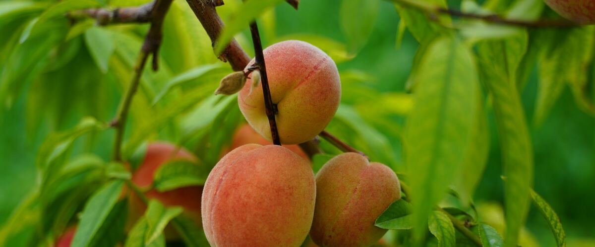

When to plant peach trees in Long Beach and Ilwaco, WA
Plant peach trees in Long Beach and Ilwaco Mar 25 – May 20.
- Difficulty
- Tricky here
- Sun
- Full sun; the hottest spot you have
- Spacing
- 12 to 15 feet apart (8 to 10 for dwarf)
- Planting depth
- Graft union 2 to 3 inches above the soil
- Frost
- Hardy perennial; comes back every year
- First harvest
- First peaches in two to four years
Why these dates
Long Beach and Ilwaco's typical last spring frost is April 6. As a hardy perennial, this crop doesn't need to wait for that date. On the coast, though, the soil usually isn't ready to work until about March 25.
Coast. Mild winters but cool, foggy summers. Frost is rarely the problem; warmth is. Pick early, cool-tolerant varieties of tomatoes and squash.
How to grow peach trees in Long Beach and Ilwaco
- Pick a sunny spot with soil that drains well, and mix in an inch or two of compost.
- Plant peach trees Mar 25 – May 20, 12 to 15 feet apart (8 to 10 for dwarf). Graft union 2 to 3 inches above the soil.
- Peaches fruit on last year's growth, so prune every late winter to keep new wood coming. Thin young fruit to 6 to 8 inches apart for good-sized peaches.
- Harvest: Pick when the green background color turns fully yellow and the fruit gives slightly to gentle pressure.
Key numbers
- 2–4Years to fruit
- Self-fertilePollination
- 6–8 inches apartThin fruit to
- Peach leaf curlBiggest risk
Growing notes
What makes the difference in Northwest gardens, in plain language.
Peach leaf curl and how to beat it
Peach leaf curl is a fungus that infects swelling buds during cool, wet weather in late winter. The leaves come out red, thick and puckered, then drop, and repeated attacks weaken the tree. It's the main reason peaches struggle west of the Cascades.
Planting a curl-resistant variety like Frost, Q-1-8 or Charlotte is the easiest answer. Many growers also spray copper fungicide once leaves have fallen in late fall and again before buds swell in late winter. Keeping winter and spring rain off the tree, with a roof overhang or a simple cover, works too, because the fungus needs wet buds to infect.
Pruning for fruit every year
Peaches fruit only on shoots that grew the previous summer. A tree that isn't pruned produces less new wood each year, and the fruit moves out to the tips of the branches. Prune every late winter to an open, vase-like shape, removing about a third to half of last year's growth so new shoots keep coming.
Peaches set far more fruit than they can size up. Thin young peaches to 6 to 8 inches apart when they're about the size of a marble. The crop looks smaller, but the peaches are bigger, sweeter and less likely to break branches.
East vs west of the Cascades
Peaches need summer heat to grow sweet fruit. The hot valleys east of the Cascades grow excellent peaches, including Redhaven, but cold winters and spring frosts can kill buds, so avoid low frost pockets. West of the mountains, put peaches in your hottest, sunniest spot and stick to curl-resistant varieties. Peach tree borers, which tunnel into the base of the trunk and leave gummy sawdust, are a pest on both sides.
Common questions
When is the last frost in Long Beach and Ilwaco, WA?
Typically April 6. In 9 years out of 10, frost is over by April 28. These are 1991–2020 NOAA climate normals for Long Beach.
Is it too late to plant peach trees in Long Beach and Ilwaco?
The spring planting window runs through May 20. Potted plants can still go in later if you water them faithfully through their first summer. Fall planting also works well here.
How long until I can pick peach trees?
First peaches in two to four years. Pick when the green background color turns fully yellow and the fruit gives slightly to gentle pressure.
Why are my peach leaves red and curled?
That's peach leaf curl, a fungus that infected the buds during wet weather the previous late winter. Spraying now won't fix it; the tree will usually push out a second set of healthy leaves. Prevent it next year with a resistant variety, copper spray in late fall and late winter, or a cover over the tree.
Do I need two peach trees?
No. Most peaches are self-fertile, so a single tree will produce fruit on its own.
Can you grow peaches west of the Cascades?
Yes, if you choose a curl-resistant variety like Frost, Q-1-8 or Charlotte and plant it in your warmest, sunniest spot. Fruit is often smaller and less sweet than east-side peaches, but still very good.
Also plant in Long Beach and Ilwaco around the same time
Planting dates for peach trees in nearby areas
- Aberdeen and Hoquiam, WA Mar 25 – May 20
- Forks, WA Mar 25 – May 20
- Port Angeles, WA Mar 1 – Apr 26
- Sequim, WA Mar 10 – May 5
- Port Townsend, WA Mar 1 – Apr 26
- Astoria, OR Mar 25 – May 20
Full planting calendar for Long Beach and Ilwaco · Peach trees in every city